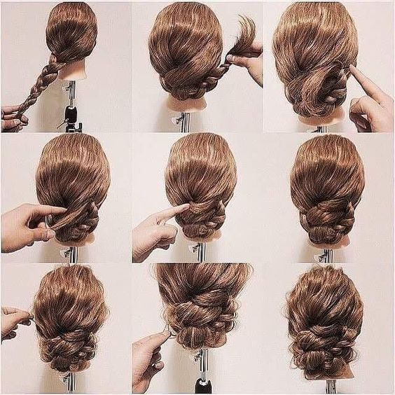

Single braid bun tutorial

All the steps
-
STEP 1
Refresh and detangle hair. Begin on clean hair that is dry
and detangled. If needed, refresh your hair with a dry
shampoo.
Brush your hair to gently remove any knots, then use a
styling oil to add shine and prevent frizz.
This will ensure that your hair is smooth and ready for your
gorgeous new braids in a bun style.
-
STEP 2
Create a high ponytail.
Pull your hair up into a high ponytail and secure it in
place with a hair tie. The center of your crown is an ideal
position.
-
STEP 3
Section your hair into three even sections. This is where
you will start creating your braids into a bun.
-
STEP 4
Complete your braid. Braid your hair all the way to the end
of your ponytail and secure it with a clear elastic hair
tie.
You can braid your hair as tight or as loose as you want,
it’s totally up to you!
-
STEP 5
Wrap your braid into a bun. Take the end of your braid and
wrap it around the base of your ponytail to create your
braided bun.
You can use the opposite hand to hold the base of your braid
in place as you coil the hair around.
-
STEP 6
Secure your bun. To ensure that your braided bun stays put,
insert bobby pins into your bun.
Place as many as needed around your bun. You might need more
pins if you have thick or curly hair.
-
STEP 7
Complete the look. You did it! You created braids into a bun
and now have a chic yet simple look.
Make sure that you spray your hair some hairspray to ensure
that your braided bun style stays in place all day long.